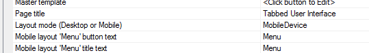
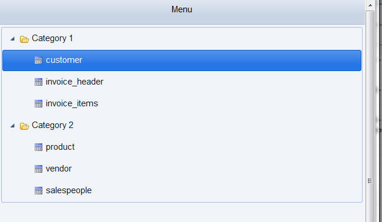
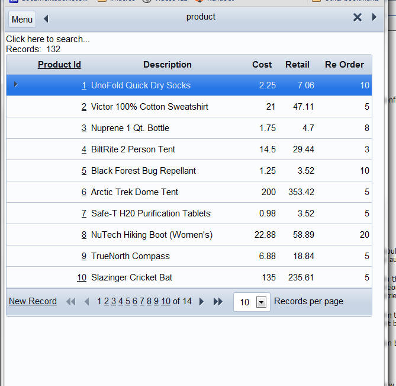

Tabbed UI Component - Mobile Devices
A new property allows you to change the way the Tabbed UI is configured so that it is more appropriate for a mobile device. See video M38.The new 'Layout mode' property allows you to select 'DesktopBrowser' or 'MobileDevice'.

Here is how the Tabbed UI renders when the 'MobileDevice' option is selected. Notice that a 'mobile' style is being used (MobBlue in this case). The mobile style renders all text slightly larger. The menu buttons take up the whole screen.

When you select an item, the menu buttons go away and the selected component is shown.

Clicking on the Menu button in the top toolbar returns to the Menu page.